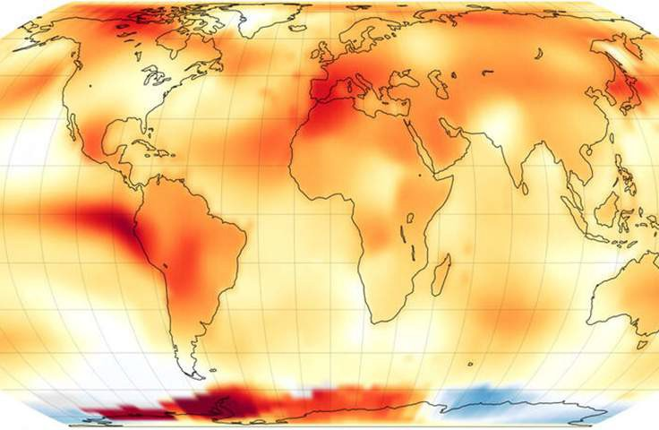

In the previous lessons, we learned about various ways to share our science, and what steps we should think about when sharing. In this lesson, we tie the concepts from previous lessons together with some specific guidance for writing the Sharing Results section of an Open Science and Data Management Plans (OSDMP). We will also reflect on how our society and technology constantly evolve, as does the way we do science. A new technology with the potential to radically alter the way we do and share science is artificial intelligence (AI), particularly when it comes to language learning models. These AI tools are already changing how we interact with written text. In this lesson, we discuss some of the ways that AI is and will affect how we do and share our science.
After completing this lesson, you should be able to:
The process within an Open Science and Data Management Plans (OSDMP) to share data and software is covered in other modules, so here we will discuss how to share the other type of research outputs. Most proposals require that you include plans for publications such as peer reviewed manuscripts, technical reports, books, and conference materials.
Though not required, it can be a good idea to include plans for making your results publicly accessible in ways other than traditional publishing, e.g. online blog posts, tutorials, or other materials. After all, writing an OSDMP is often required for funding requests, and this can be a way to show proposal reviewers that you are thinking about how to best share your science.

Write a sample results section of an OSDMP that details how you would plan to make your results open. Think about an example from your research and what details you would need to include to convince reviewers that you will share open access results.
Example 1: This activity will result in 2 peer-reviewed publications that will be published green open- access. Pre-prints will be archived in PubSpace.
Example 2: This activity will result in the creation of computational notebooks, 4 conference abstracts and posters, 2 peer reviewed manuscripts, and 2 online plain-language articles, summarizing our results. Peer-reviewed publications will be published green open-access and pre-prints will be archived in PubSpace or the journals open-access preprint server. All other materials will be archived at Zenodo, assigned a DOI, and assigned a CC-BY license or permissive software license.
For these examples, what other information or details could be added? If you were planning to write a tutorial about your science, what would you include?
NASA Announces Summer 2023 Hottest on Record

Image credit: NASA Earth Observatory/Lauren Dauphin.
When results and research objects are published openly, anyone can reproduce the scientific result. For topics like climate change, the transparency of results helps reduce misinformation and increases public trust in results.
Here is a GitHub repository with an example of a result made available as open access. This visualization is not perfect but provides a snapshot of a work in progress that can be shared with the community for feedback and refinement. This could be further refined, or perhaps serve as the start of a new effort that will extend the initial results. The results are more accessible, inclusive, and reproducible by being published openly.
There are lots of ways that open science can extend the span or scope of projects. Here are some steps you can take to share your open results in a way that makes your work more usable, reproducible, and inclusive:
Throughout these modules, the internet has been identified as a fundamental disruptive technology that changed how almost all of science is accomplished. Scientists rarely go to libraries to read the latest journal articles. Data is no longer mailed around the world on tape drives. Software isn’t shared via floppy disks. The internet helped create the modern scientific workflow and made science more interactive and accessible. Now AI tools are starting to disrupt science in a similar manner. AI is not only revolutionizing many aspects of our lives, it is also changing how we do science. As companies race to create and integrate new generative AI tools into every aspect of our lives, many scientists, institutions, journal publishers, and agencies are looking to see how to use these tools effectively, understand their reliability, accuracy, biases, and how to also use these cutting edge tools ethically. An additional concern is how any information shared with AI tools may be used to intentionally or unintentionally disclose confidential data, leading to privacy concerns.
AI can help us use and share research. It can act as an accelerant, taking care of tedious tasks while leaving scientits free for more creative thought. These tools are better than humans at processing vast amounts of data, but humans are better at creative and nuanced thought. This is important to consider when determining whether or not to use AI. As an example, many people already use AI tools to help with their inbox management and writing emails with AI generated suggested content. Within science, there are many potential tasks that could potentially be expedited using AI, according to three studies published in Nature:
| LITERATURE REVIEWS ☑ | SEARCHING FOR RELEVANT DATASETS AND SOFTWARE TOOLS | LANGUAGE BARRIERS |
|---|---|---|
|
The ever-increasing volume of scientific literature has made it challenging for researchers to stay abreast of recent articles and find relevant older ones. AI tools can be used to create personalized recommendations for relevant articles as well as create summaries of them in various formats. Some examples of these tools include SciSummary, SummarizeBot, Scholarcy, Paper Digest, Lynx AI, TLDR This. Possible drawbacks when using these tools include:
|
||
| LITERATURE REVIEWS | SEARCHING FOR RELEVANT DATASETS AND SOFTWARE TOOLS ☑ | LANGUAGE BARRIERS |
|---|---|---|
|
AI tools can be used to discover different datasets that may be relevant to a scientific query and recommend relevant software libraries. |
||
| LITERATURE REVIEWS | SEARCHING FOR RELEVANT DATASETS AND SOFTWARE TOOLS | LANGUAGE BARRIERS ☑ |
|---|---|---|
|
AI tools can be used to create automatic translations into different languages. Several of the tools above also offer translation. |
||
| CODE ☑ | RESULTS |
|---|---|
|
AI tools can be used to generate code to perform analysis tasks and translate between programming languages. Some examples of these tools include Co-Pilot, Codex, ChatGPT, and AlphaCode. Usage tip: Popular large language models can be used to generate code, but it has been noted by many that breaking down tasks and using careful prompts helps generate better results. |
|
| CODE | RESULTS ☑ |
|---|---|
|
AI tools can be used to generate text, summarize background materials, develop key points, develop images and figures, and conclusions. Using these tools may help non-native speakers communicate science in different languages more clearly. Additionally, they could be helpful to develop plain-language summaries, blog posts, and social media posts. Some possible drawbacks when using these tools:
|
|
Journals are increasingly implementing guidelines and requirements concerning the usage of AI tools during the writing process. Many require that the use of AI tools for writing, images creation, or other elements must be disclosed and their method of use identified. As is the case with all other material within an article, authors are fully responsible for ensuring that content is correct. Examples of this policy can be read in the AI guidelines of Nature and NCBI.
Furthermore, there are numerous examples of generative AI (for both code and content) delivering plagiarized information in violation of licenses, as well as fabricateding material including citations. Using these AI tools may lead to findings of academic and research misconduct should fabrication, falsification or plagiarism be contained within AI generated materials. So BE CAREFUL. Learn more about possible issues with AI in a Nature example here.
At this time, and for these reasons, AI tools are generally not allowed in grant applications or in peer- review or proposal review activities.
The National Institutes of Health (NIH) has prohibited "scientific peer reviewers from using natural language processors, large language models, or other generative Artificial Intelligence (AI) technologies for analyzing and formulating peer review critiques for grant applications and R&D contract proposals." Utilizing AI in the peer review process is a breach of confidentiality because these tools "have no guarantee of where data is being sent, saved, viewed or used in the future." Using AI tools to help draft a critique or to assist with improving the grammar and syntax of a critique draft are both considered breaches of confidentiality. Read NIH's AI policy here.
AI tools for science are developing rapidly. The science community's understanding of how to ethically and safely use AI is just developing as its use in research expands rapidly. The guidelines above offer a snapshot in time and will likely continue to evolve. If you choose to use these tools for scientific research, carefully consider how much to rely on them and how their biases may impact results, as cautioned in this Nature article. The internet has transformed the world and AI tools are likely to do the same. As with any tool, it is important they are used for the appropriate purpose and in an ethical manner.
The steps that we highlight to make your research more reproducible and open will advance science and the impact of your research. In fact, the steps we have highlighted are things we can do immediately to ensure we make open and reproducible results.
In this lesson, you learned:
Answer the following questions to test what you have learned so far.
Question
01/03
Read the statement below and decide whether it's true or false.
It is a good idea to include plans in your OSDMP for making your results available in ways outside of traditional publishing, e.g. online blog posts or tutorials.
Question
02/03
Which of the following aspects of AI are considered as benefits? Select all that apply.
Question
03/03
Which of the following are steps you can take to share your open results online? Let's assume that, like the activity, you are sharing an interactive visualization.
Science is meant to benefit society. Sharing our science helps ensure that it benefits society and informs the decisions of the public and policymakers, especially when funded by public agencies or governments. Going back to the 'Ethos of Open Science' module:

"Open Science is the principle and practice of making research products and processes available to all, while respecting diverse cultures, maintaining security and privacy, and fostering collaborations, reproducibility, and equity"
Throughout this curriculum, we have focused on skills needed to make research products and processes available to all. The traditional practice of only sharing results limits insight into how science is done and may act to limit who can participate in science. By sharing your scientific process and working openly, you advance all of science in a more rapid and inclusive way. This curriculum will continue to evolve as science evolves and we welcome your contributions!
Learn more about NASA's transformation to open science and join conversations following the link.
Congratulations! You have successfully completed Open Science 101! Thank you for taking the time to learn about open science - you are part of a broader movement to improve science and make our world better!
Ready to learn more? Here are some great next steps:
TOPS website
TOPS GitHub Discussion Forum
OpenSciency
Open Science MOOC
Carpentries
The Turing Way
Center for Open Science
Open Science NL
These are just a start - there are a lot more fantastic open science resources online! Keep your eye out for discipline-specific learning content that is currently being developed by NASA ScienceCore grantees, and that will be linked here once available!